Computer-Vision Pose Estimation for Planar Mobile Robots
An overhead fisheye camera gives a differential-drive robot its absolute world-frame position to augment drift-prone dead reckoning pose estimation. I assembled the entire pipeline including fisheye camera lens calibration, ArUco marker detection, Perspective-n-Point solution, an original analytical camera-to-world-coordinate solution, and a four-microcontroller wireless link that delivers the estimate to the robot. I then validated it against ground truth.
- Role
- Solo — design, build, test
- Focus
- Localization · Embedded comms · Experimental validation
- Stack
- Python · OpenCV · ESP-NOW · STM32 · FreeRTOS
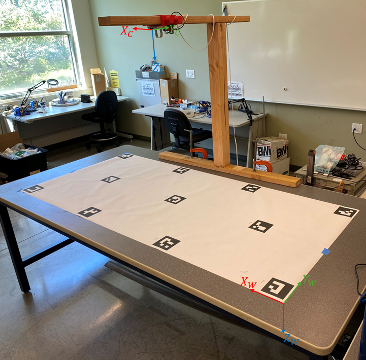
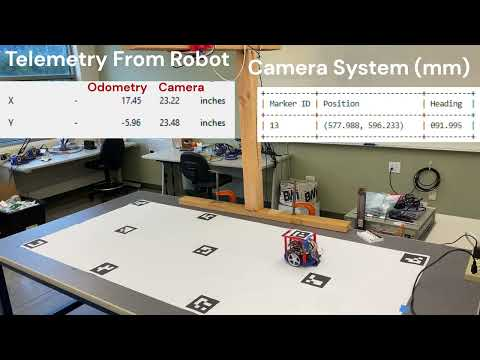
The problem
The "Romi" robots used in Cal Poly's mechatronics course navigate by using state estimation to fuse wheel odometry with an IMU. This effectively uses dead reckoning to generate pose estimates. These estimates drift over time as wheels slip and the magnetometer in the IMU is disturbed by motors and nearby metal. There was no external source of absolute position to correct it.
The goal for this project was to develop a low-cost, portable system that gives each robot its true pose in a fixed world frame, accurate enough for course maneuvers, fast enough for closed-loop use, and simple enough for students to set up and tear down repeatedly. The design targets were
- ±5 mm accuracy at a ≥10 Hz update rate (inherited from a prior senior project)
- Track ≥6 robots simultaneously
- Keep the robot's onboard MCU an STM32 (course requirement)
- Reuse existing hardware; portable, no permanent lab install
Overall approach & design decisions
This was a solo thesis, so I made and defended every architecture choice.
Sensing & math
- External overhead camera over onboard-only sensing
- A single fisheye camera (Raspberry Pi Camera Module 3 Wide, 120° FOV) to cover the whole track from one mount, accepting lens distortion as the tradeoff.
- Fisheye lens calibration from ~40 checkerboard images to estimate the camera's intrinsics and characterize lens distortion.
- Detect ArUco markers, then solve the Perspective-n-Point problem using RANSAC to reject outliers from imperfect undistortion.
- An original analytical derivation recovers a marker's world X and Y positions from a single PnP solution and its known height so that the system doesn't re-solve PnP for every estimate.
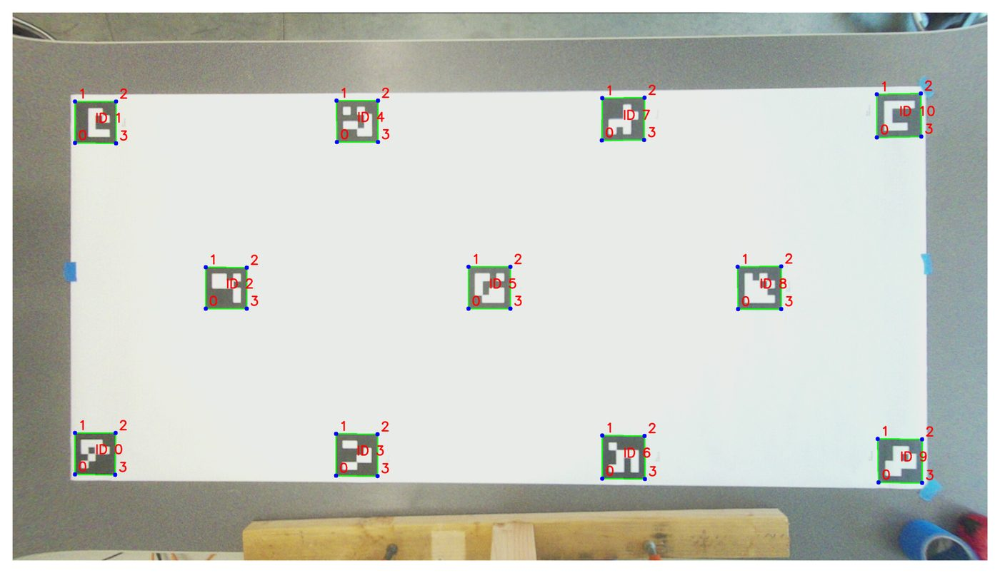
Communication
To get the estimate onto the robot with low latency, I built a four-MCU pipeline:
I used ESP-NOW because it's connectionless and provides low latency wireless communication, and UART to the robot because it's already taught in the course already. The vision application is deployed as a threaded Python script on the Pi (picamera2 / libcamera / spidev), and the ESP32s run C using FreeRTOS.
Obstacles and Solutions
- Regular lens → fisheye. I started with a standard lens camera, but in order to fit the whole table in the frame it had to sit so high that the ArUco markers came out too low-resolution to detect reliably. Switching to a fisheye lens kept the entire table in view at a usable resolution. This added lens distortion, which could be calibrated out, but gave the marker resolution needed.
- Homography → analytical PnP. My first pixel-to-pose method used homography and assumeed every marker lay in the same plane as the fixed calibration markers. But a marker mounted on a Romi sits higher than the floor markers, so that flat-world assumption produced systematically wrong poses. This motivated the current analytical, PnP-based transform that accounts for marker height above the plane of the table.
- Fisheye calibration was finicky. OpenCV fisheye lens characterization based on images of a calibration pattern would fail based on a specific image, but which one depended on the rest of the set. So, rejecting one bad image would just expose another. I wrote a script to automate the dataset selection process and converged on a working set of 42 images. The fisheye calibration is sufficient but not perfect. Some residual distortion is visible at the frame edges (I'm not convinced perfect fisheye calibration is even achievable), and that residual distortion is likely the leading source of pose error.
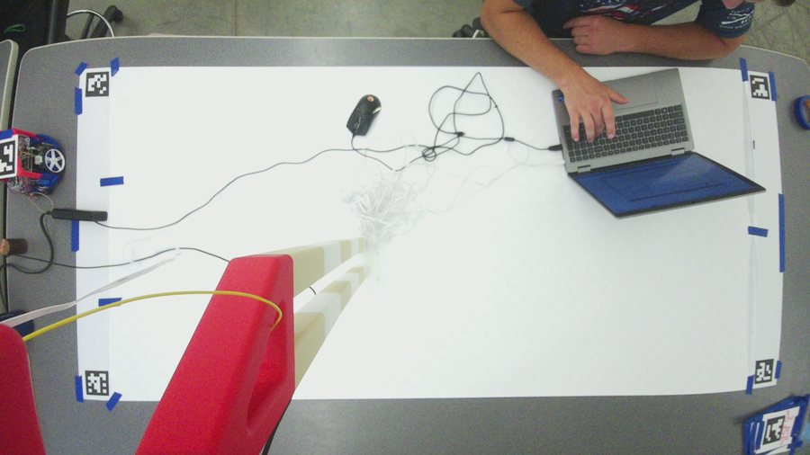
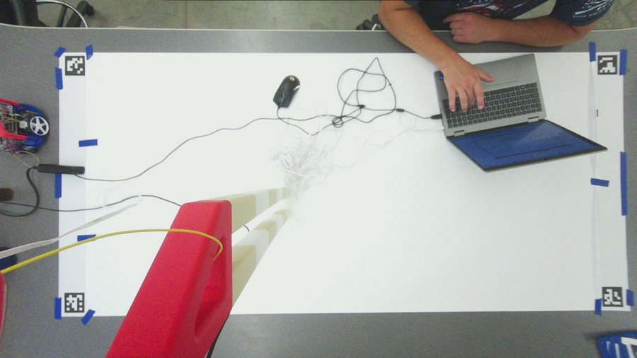
Against a static robot, the vision estimate matched ground truth well. But on a moving robot the estimate visibly diverged from odometry. I traced this back to end-to-end latency (the estimate lags the robot) compounded by inaccuracies in the computer vision pipeline and odometry drift. I documented it as a limitation of this project and it directly shapes the "what's next" below.
Results
Static accuracy came in at a few millimetres, and latency landed near the real-time budget. It did not quite hit the aggressive ±5 mm target, but the error is comfortably inside the ~±35 mm tolerance of the tightest course maneuver — so the system is usable for its intended job.
| Metric | Result | Notes |
|---|---|---|
| Accuracy — table plane (Z = 0) | 2.6 mm avg · 4.2 mm max | 11 markers |
| Accuracy — robot height (Z = −130 mm) | 3.9 mm avg · 6.0 mm max | 7 markers |
| Reprojection error | 2.75 px mean | ±0.25 px run-to-run, 44 corners |
| Vision latency | 82 ms mean | 73–168 ms; ArUco detection ≈70%, undistort image ≈30% |
| Communication latency | ≈4.6 ms | SPI 6 MHz · ESP-NOW · UART 115200 |
| End-to-end | ≈87 ms | vision + comms |
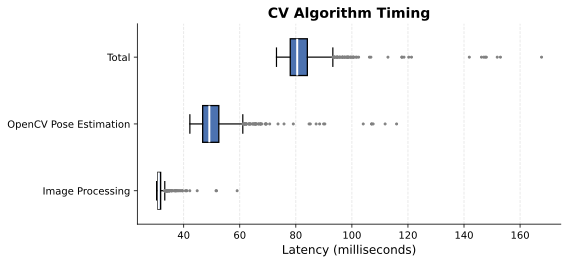
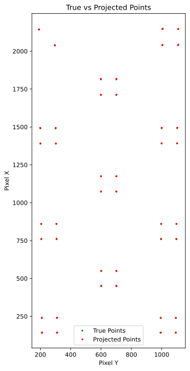
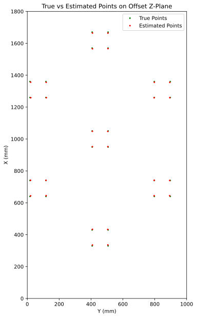
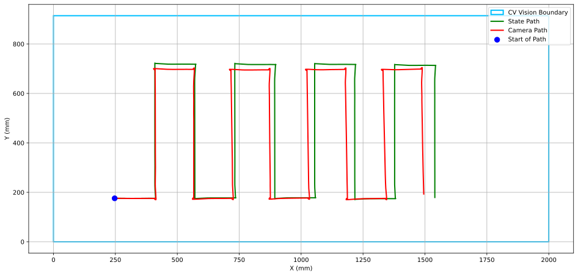
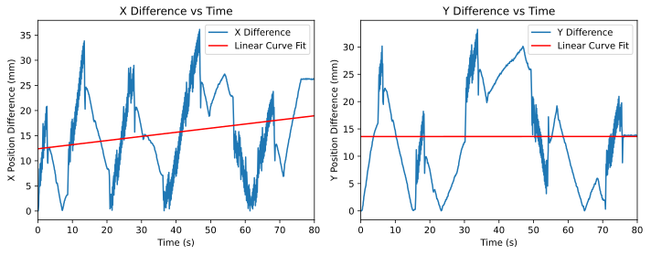
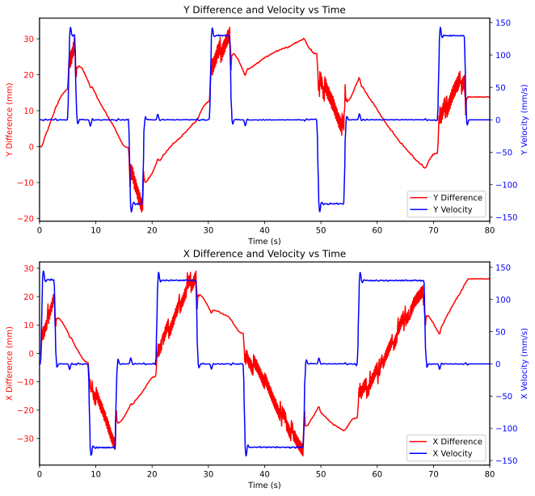
Next Steps
- Cut latency via hardware upgrades. ArUco detection is ~70% of computer vision computation time. A lower-resolution detection pass or additional computation power would help. Additionally, the camera's rolling shutter, which reads the sensor line-by-line at a fixed frame rate, and driver-level camera interface software constrain the image-capture latency. A global-shutter camera and a device with a more powerful processor would be the most effective way to help reduce latency from these sources more than additional code tuning.
- Remove corner distortion. Upgrade to a higher resolution, standard FoV camera so that it can mount high enough to capture the entire game track while retaining sufficient marker resolution for reliable detection.
- Compensate for motion. A predictive filter (e.g. constant-velocity forward-projection or a small Kalman step) would counter the lag that shows up on moving robots.